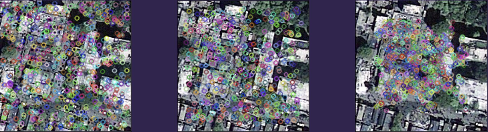

Change Detection
Quantifying structural changes in the environment conditioned upon a catastrophic event (e.g. seismic, metereological) using edge detection and change detection algorithms could be applicable to estimating the extent and severity of damage at a location. Quantifying the degree of uncertainty related to a detected edge and the relative pre-versus post-event change in edges could be applied to prioritize specific locations (cells/rasters) for assignment and scheduling of additional image collection during the path planning of drones. To attempt to quantify the changes, we extracted SIFT, SURF and ORB features from the pre and post-catastrophe images. These features are visualized below. The pre-catastrophe images were observed to have low spatial resolution relative to post-catastrophe images. Therefore, we were able to identify more features from the post-catastrophe images. This discrepancy in the number of features caused a difficulty in identifying which features in the pre-catastrophe image were actually changed. This might indicate that working with the image data in pixel space in order to identify the structural changes is difficult due to the observed discrepancy in spatial resolution.

-
